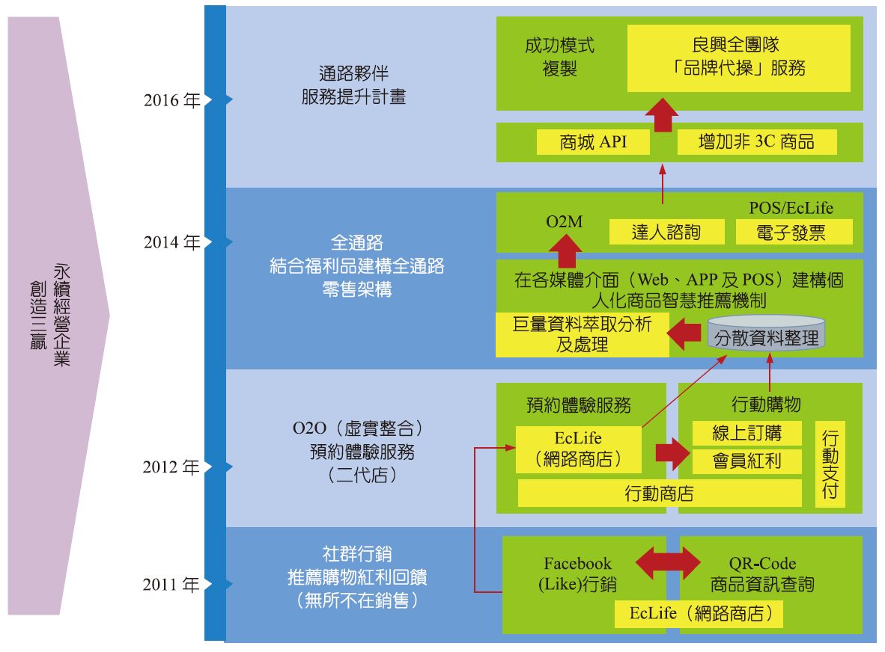
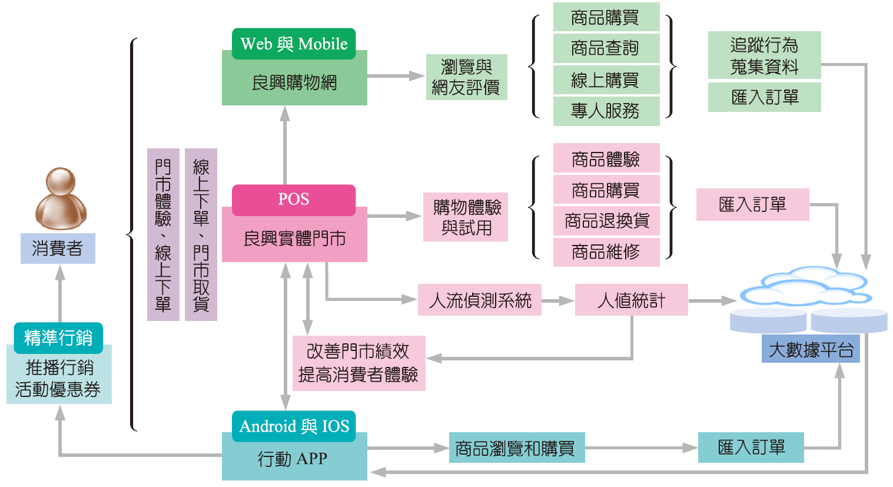
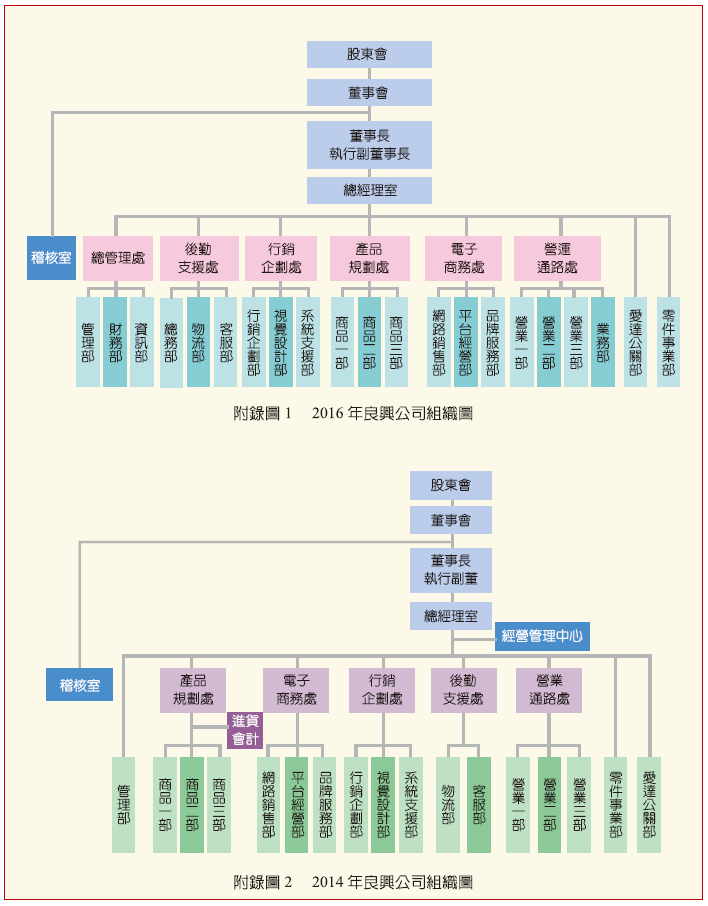
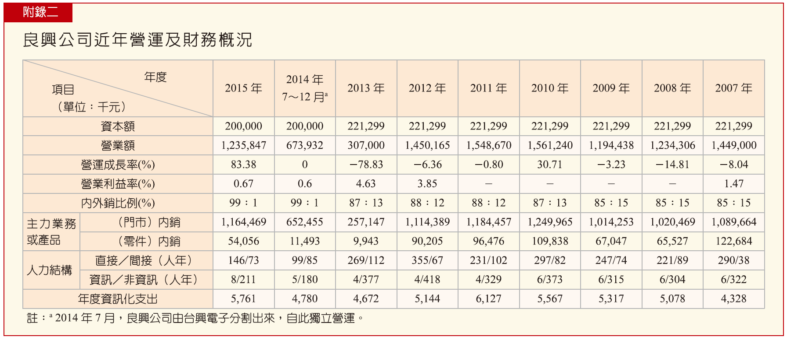
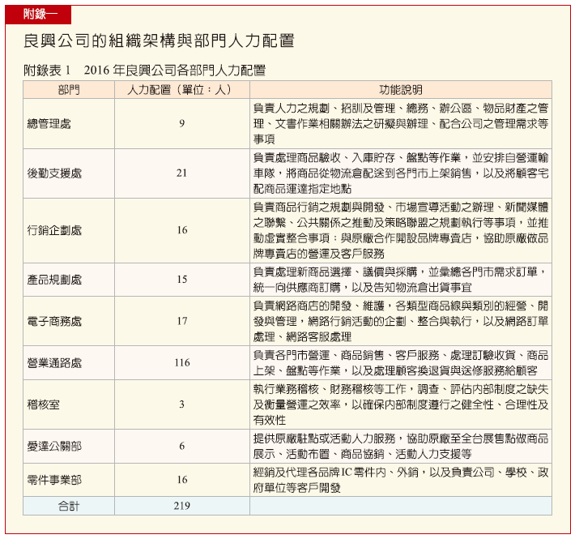

ITRI Case Study → AI Consultant Deck
良興全通路轉型
從 3C 老店到數據營運公司
把工研院個案中的圖表、流程與管理洞察，重製成可用於企業 AI 顧問討論的精美圖文 PPT。
資料來源：工研院產業學習網〈良興全通路轉型個案〉
把工研院個案中的圖表、流程與管理洞察，重製成可用於企業 AI 顧問討論的精美圖文 PPT。
資料來源：工研院產業學習網〈良興全通路轉型個案〉
「外面還沒打仗，裡面先打一仗。」
全通路專案的第一道阻力，常常不是技術，而是業績歸屬、工作分配與組織信任。
電商搶業績、APP 推廣增加負擔、資源被線上部門拿走。
資訊系統投資大，短期效益不明顯，董事會重視成本控管。
重設 KPI 與分潤，讓門市推會員與線上成交也能共享成果。

良興購物網、供應商入口、商品上網與庫存協同。
社群分享、行動購物、行動支付與會員經營。
O2M、APP、門市 POS、Web、會員與大數據平台串接。
把客服、推薦、庫存、促銷與主管報告變成可複用能力。

門市、Web、APP、POS、電話諮詢、社群互動。
會員、庫存、瀏覽軌跡、購買紀錄、售後服務、活動反應。
客服摘要、商品推薦、促銷企劃、庫存預警、主管報告。

2016 年開始，產品規劃處被拉高為成長動能角色，網路像「空軍」先行，門市像「陸軍」後發。
不要只建 Bot；要設計誰使用、誰審核、誰負責、誰分享成果。
原始表格適合附錄；對外簡報要改成 4–6 個決策數字，讓聽眾一眼抓到轉型回報。

讓網購會員也感覺像親臨門市，線上導流到人。
門市無庫存時，由 POS 下單宅配到家，提高坪效。
AI 先釐清需求、比對商品、產生摘要；高價值案件交給門市達人。

越接近營運核心，越不能只有模型能力；必須有流程、制度與可追蹤責任。
會員、商品、庫存、交易、客服、活動反應。
門市、電商、客服、行銷的 KPI 不能互打。
推薦、客服、庫存、促銷、主管報告比泛聊天更有價值。
AI 做前處理，專家做判斷與高價值互動。
成交率、毛利率、回購率、服務時間、庫存週轉。
良興做的不是「開一個電商網站」，而是把門市、會員、商品、服務與資料變成同一套營運能力。
這也是企業 AI 導入的方向：不是多一個聊天機器人，而是把企業 Know-how 變成可運作、可追蹤、可擴充的 AI Skills。
改編與圖文重製：文文｜原始文章與圖表：工研院產業學習網